The Future - Typical guesses by the uninformed
I imagine most people reading the title will immediately shout things like:
- Even more realistic graphics and complex gameplay systems that simulate more things with even more detail!
- Generative Artificial Intelligence fully utilized in a big AAA game to drive the creation and functions of characters, items and worlds!
- Full body VR finally reaching enough maturity and it becomes cheap enough for everyone to afford it!
- Hologram based Augmented Reality or Mixed Reality tech!
- Super advanced procedural generation tech!
- Better/flawless netcode!
Nope, none of these.
None will actually improve games as they are today.
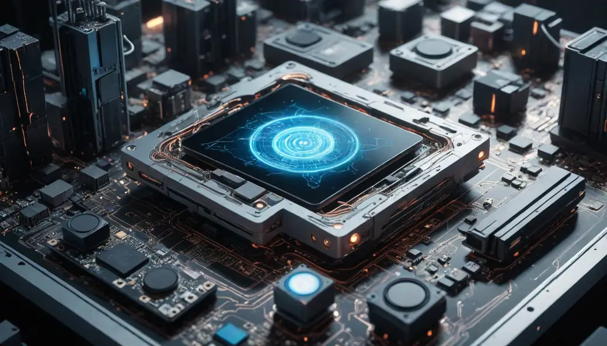
While graphics, physics/systems simulations, connectivity and AI technologies have taken leaps in the last few decades, design technology has lagged behind and has been mostly forgotten, even neglected - despite being the most important part of a game.
Game design itself always determines the final gameplay experience for every player, regardless of any other tech. If it's done poorly, nothing else will matter.
Design technology - a new method of thinking
If you play a lot of video games, you may have eventually come across an indie game that somehow was way more fun than the most highly polished AAA games you've played. The reason the indie game won you over was because of ‘design technology’.
‘Design technology’ is essentially how to think - the mindset, the methods, the process, the tools, the approach on how to design, build, release, market and maintain/update the game.
Just like physical technologies, design technologies have their own versions of blueprints, schematics, workflow charts, tools and methods that deal with how to use our minds to craft a better product or service.
They’re essentially recipes for how to use our brains to make better stuff and do it more efficiently and cleaner than before.
The only difference is that the final product of design technologies is usually invisible to the naked eye and difficult to show physically like a painting or a line of code - it's an abstract thing like standardization, quality assurance, best practices, compatibility, benchmarking, streamlining, encapsulation and many similar design technologies. All these are tremendously useful and instantly make sense when you see them in action through the medium of something but by themselves they have no visible or tangible form.
Game design - a neglected or misunderstood practice
Tragically, precisely due to its invisible, abstract nature, game design is massively neglected throughout the games industry.
When it comes to small and midsized companies, usually the entire workload of game design is offloaded onto a clueless coder or artist who is expected to do the work of two people alone.
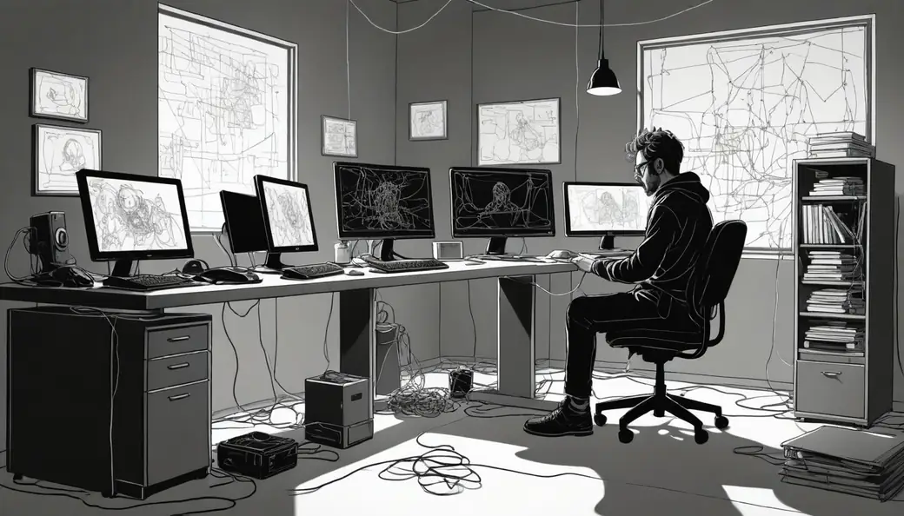
Sometimes no one takes the job of a game designer, with the entire team instead doing a meeting and throwing random ideas and expecting a holistic game design to somehow automatically emerge from these meetings. Effectively no real game design is done, just aimlessly throwing darts at a board while hoping for the best.
In larger companies there's an odd reversal of this where they have multiple game designers that have been separated into insulated silos and are tasked with a specific part of the game - characters, environments, weapons, props/items/objects, user interface, story systems, metagame, monetization, minigames. This lunacy is sometimes taken a step further by having a dedicated designer for the subcategory of those parts.
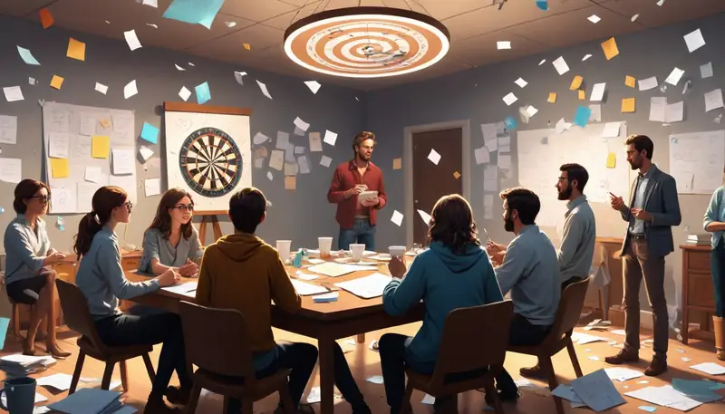
Then there's a producer/director that has the final say on anything all those designers create. To top it off, usually the producer also has to answer to the boss of the company, adding yet another person into the mix who also probably knows nothing about game design yet can influence major and minor design decisions at every point of the development.
Then, everyone magically expects the individual designers, the producer and the boss will culminate their collective input - along with concept artists, coders and modelers all their friends and family - to create a cohesive holistic design with a clear vision.
And then yet again another indecisive mess of a final product is released to the public that tried to please everyone but ended up truly fulfilling absolutely no one. All that effort put into art, code, sound, writing... all down the toilet.
Mid-air surgery is never a good idea
See, for any given project, there can only be one game designer per project. Everyone else is supposed to be an expert that the designer must rely upon, consult with, communicate with and hand out blueprints with clear specifications - doing their best so that the experts of each field will have everything they need to get the intended result.
Even more so, the person that holds the driving vision of a project must be the game designer themselves. These tasks cannot be delegated to another person because they are crucial in being the core problem solver, core design decision maker for every aspect of the game. The project lives and dies with the game designer, it can't be shared.
In the event the game designer leaves the team, a new designer must take their place but from that point on, the vision for the game will change dramatically because no two people think alike perfectly. Any existing design decision will need to be reexamined or else the cohesion of the project is likely to break apart and create conflicts of the game’s purpose that'll surely ruin the final game.
Pardon the food analogy, but it's like someone was originally baking a big cake but then all of a sudden due to staff changes it is decided that this cake should be a soup instead. You can imagine for yourself how badly that idea would go down.
Games are very fragile things design wise. Even the tiniest design decision can have a massive impact on the future of the game that will haunt the team in one way or another - be it technical debt, hollow core gameplay that is unfixable, difficulty of expansion, mismatching content, standardization failures, or being painted into a corner business/monetization wise.
These and others are subtle yet crippling issues that often are best solved by starting over with a blank slate. Trying to work around them or live with them will incur a cost that will stay very irritating like a thorn stuck in flesh.
Now, one could argue that "hey, can't team members just communicate with one another to reach a consensus and thus ensure that any design they make together will be holistic and cohesive?"
Won't work. It has to do with everyone being different, having different preferences, thinking differently and viewing things from their unique perspective. These cannot be combined as they often are at conflict with one another. A unified vision cannot take place if there's more than one central person putting the puzzle pieces together. Too many chefs will ruin the broth, as they say.
To that, someone might say "hey, the producer is the central person! It's fine to have as many designers as long as there is one product owner i.e the producer, right?"
Sadly no, the problem is still the same; design decisions - no matter how tiny - are delegated to people that will be different to the producer, each with their own personal idea of what the purpose of the game is, which will always differ due to each person being a unique individual.
Again, it's the same 'too many chefs problem', no matter how you organize them. There’s a good reason why Miyamoto, Kojima, Miyazaki, Sakurai and other well known game designers are so successful - they control the vision of the project, molding every single design decision to be specifically tailored for the project they own as a game designer (or game director - same thing).
The following is how game design should be done
Design work at its core is about abstract problem solving. It starts with an idea that came about by epiphany - a new vision of something that is exciting and teeming with potential - a novel way to satisfy fundamental human needs that is better than what was previously available. An idea so good that it genuinely excites with its great potential!
A designers job is to be the conduit that leverages the knowledge of fundamental human needs and gathers intelligence from the experts around them to map out the limitations, possibilities, strengths and weaknesses of the available people, resources, timeframe and conditions/circumstances to come up with the best possible solution that will satisfy all goals while taking into account all the obstacles/limits present.
Every design decision must flow through the game designer as they are the nexus that can evaluate whether or not a solution is valid and wrong during any design decision regarding the system that runs the game or anything that surrounds the game - including things like marketing, community management, post launch maintenance/updates - all these are part of the game experience too!
The game designer essentially produces blueprints/instructions/guidelines for every relevant expert so they know what needs to be done and how to do it. The blueprints contain a level of leeway allowing the expert to do their job in the way that they see is most comfortable and best. As long as design requirements are met, the expert - be it coder, artist, marketer, writer, community manager, specialist, boss, etc. - can inject their own personality into the work, add their own touch or do their work even in the most unconventional way if it happens to be better in their judgment.
To make good blueprints/instructions, the designer must speak with the expert to find out their methods of work, their skill level, their limits and their specialities. The final given blueprint must take this intel/data into account as it is tailor made for that expert specifically.
Depending how clear/unclear the vision of the game is, several test prototypes might be made to try out any ideas/parts of the project are unclear until eventually the true final game will be built according to a build order, first getting a playable minimum barebones game operational - which is fully playable from start to end even if it's really basic/rudimentary at that stage - then adding in the different systems and content, gradually building it up to its intended completion.
This is how it's supposed to be regardless if it's a solo project, small team or big team.
The next great innovation is a holistic game design approach
Now, the future of games, the next great innovation is actually the mindset on how to organize games - the combined unified logistics and systems for how to set up the metagame, how content is handled and how the lifecycle/business model of a game should be set up. As a whole.
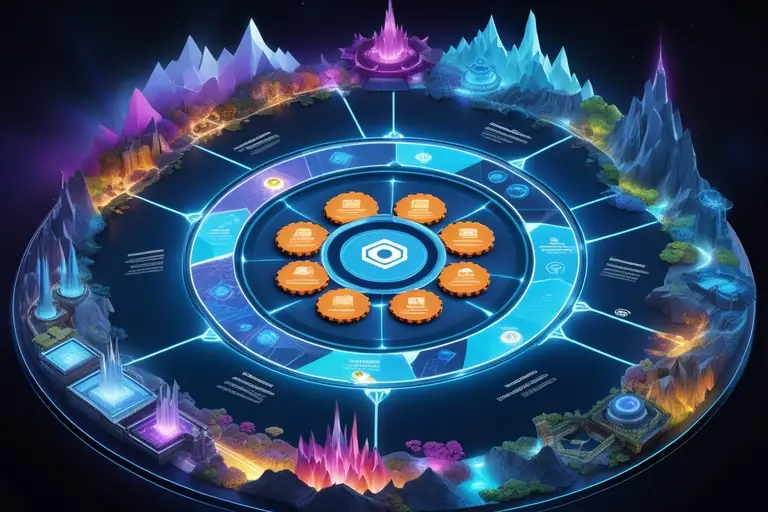
This may come to you as a surprise and even seem too simple, trivial even, maybe even going as far as to say "current game studios and their designers are quite skilled at their job and have decades of experience, surely they would have thought about every possible basic way to set up a game, it's metagame and content, right?"
Nope. As I outlined how ass backwards game design usually works in most studios, most of the time innovation doesn't happen because people are trying to stay safe by building games that are "proven to work" and don't question traditions/conventions - essentially blindly following an old script that is regarded as sacred texts when in reality it's just a piece of toilet paper.
Furthermore, in large companies there are often hierarchies that further stifle innovation and creativity. Meanwhile in the case of small teams and solo indie devs, it's often low self-esteem that is the culprit that sabotages critical thinking necessary to break out of the mold.
And if that wasn't enough, society itself prefers to educate, enforce and maintain obedience over people and often this requires that people are not taught to think independently and be self sufficient, because it's harder to control others when they know their worth.
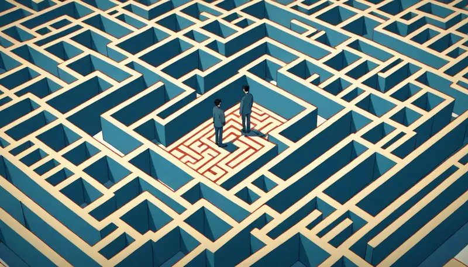
Lastly, people either aren't taught how a human being truly works mentally or they aren't given clear information that isn't mixed or bundled up with something completely unrelated, usually leaving a person misinformed and confused about the details because they make no sense and are too vague. Even worse, there's usually a lot of harmful indoctrination that teaches people false beliefs, bad methods and useless goals.
As a result, the vast majority of game developers and game designers out there are very incompetent, across the entire industry. They can write amazing code, draw dazzling art, compose amazing music, but game design quality is utter dogshit.
Truly, most game design that exists today is still unbelievably primitive and misguided.
There is still an incredible untapped potential in video games that has not been utilized and it isn't even complex big brain stuff. Small subtle changes that are available right under our noses is all that is needed.
If I were to summarize what to do then I'd recommend these actions
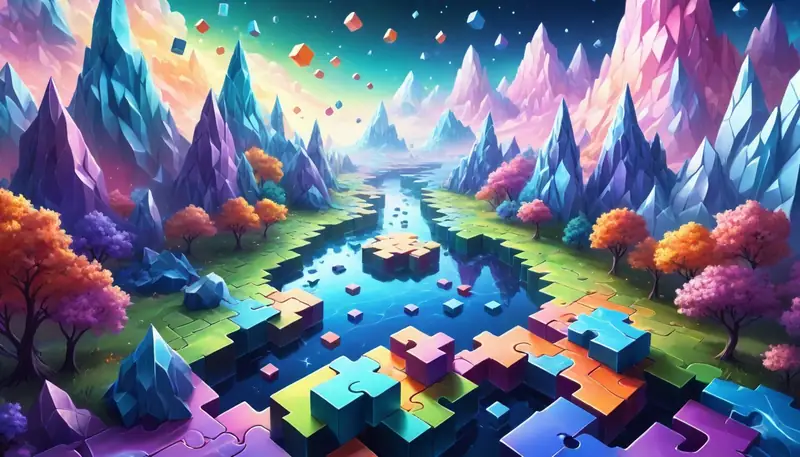
- Reorganize content and metagame system for reuse, modularity and remixing in any possible and impossible way you can think of. For all and every aspect of the game.
- Allow chaos to flourish through randomness, make room for the unexpected to happen.
- Prefer open world instead of linear. Even if it's just for a level select screen.
- Let players tackle mission objectives or the metagame in multiple ways.
- Embrace momentum and physics driven/assisted gameplay (if applicable).
- Have more than one ending. Offer choice and give agency to the player.
- Let the player be free and unhinged. Accommodate for that, don't be afraid of it or try to forcibly restrict/control players' will for freedom.
- Don't punish and don't reward - they're both two sides of the same coin, neither do the player any favors. Instead, provide a support line that the player can consult when they need to.
- Don't make the game about your ego or yourself, adopt a mindset of trying to make life more wonderful for the player as the primary purpose. Put yourself in the players shoes. See in what ways the developer could maximize the value of the game in terms of gameplay experience and content.
Examples of this in action:
The following examples try to demonstrate what to do concretely during coding or design. While each game has its own style, the principles behind these recommendations are adaptable to other game projects with different styles too.
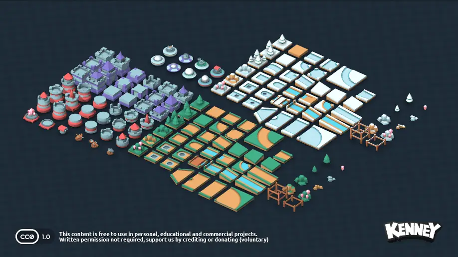
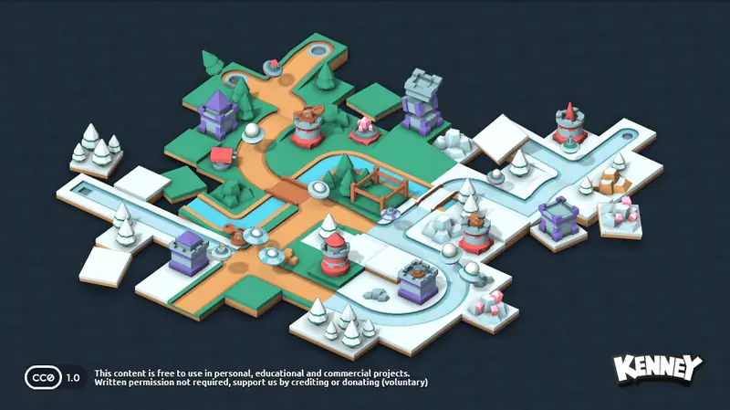
+ Focus on standardized, modular content that doesn't limit how many new pieces can be added into the game. In menus, prefer scrolling lists, drop down boxes, content browsers, dynamically scalable UI bars instead of hardcoded buttons and slots that put hard restrictions on what is the maximum amount of content the game can support in its interfaces, its code and its potential for future content updates.
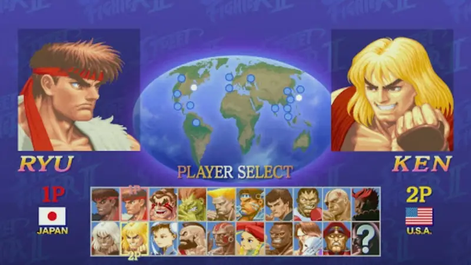
+ Avoid hard coding anything related to content - consider more possibilities of being able to switch/replace the main character, to be able to change how the main character controls and behaves on a fundamental level - player could be a human, a car, a helicopter, a dog, an alligator, a biomass blob, a group of drones…
+ When making content/assets, streamline the creation process to be as minimal and easy as possible. On a broader level, high quality complicated content is worthless if it's rare, inflexible, slow/difficult to produce and one dimensional - if asset/content creation becomes a bottleneck in your workflow, then the game will never be able to truly thrive due to long delivery times, lack of interchangeability, meanwhile getting external help would be harder due to the inflated/strict quality standards.
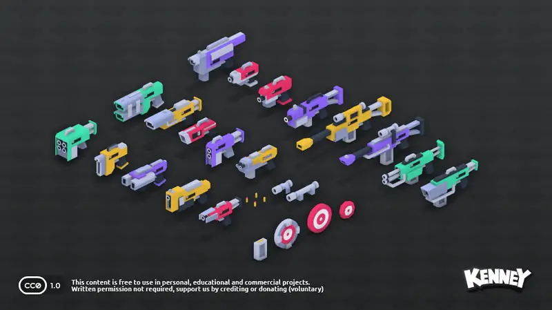
+ Prefer mass production, easy onboarding for anyone else to learn and make new assets besides only yourself. Make the barrier to entry as low as possible not just for others but yourself too - it's the content that is ultimately at the center of a game and if there isn't a steady flow or large amount of it, then there isn't much to play, you know? Concretely this means reduce animation frames, reuse graphics where possible, take advantage of color tinting and in-engine functionality to modify images on the fly (with shaders or otherwise) and aim for game systems and mechanics to require as minimalistic graphics solutions as possible in terms of effort needed to build them.
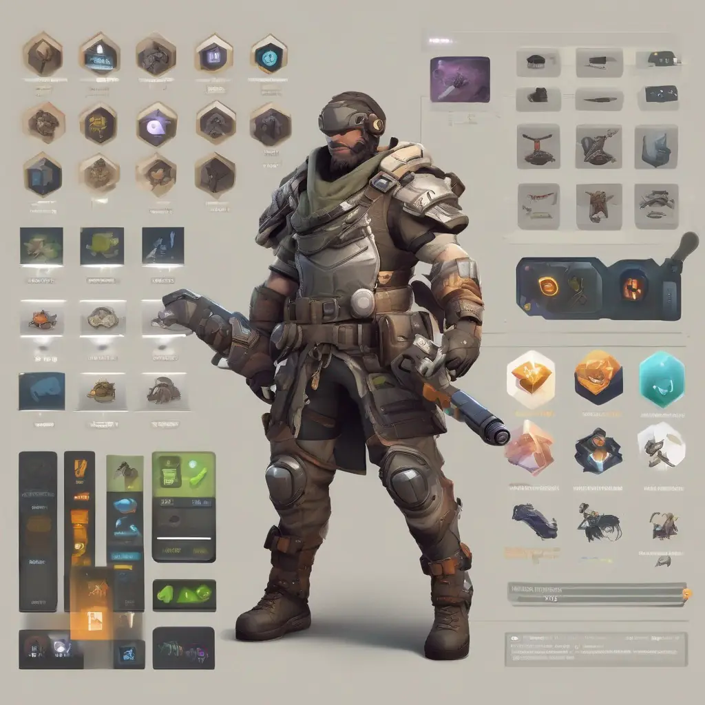
+ Prefer systems where a player or npc could freely switch what abilities, equipment and items they can carry or use on the fly. Code in the interface/structure that simply considers the characters hands and how they can accept any type of object to hold, use, stash, drop and throw, allowing the character to equip or use virtually anything through context sensitive flags (i.e this item is a held weapon, a consumable item, an ability activator, player stat/parameter changer) instead of making any particular item, ability, weapon or equipment something that is bolted onto the player with no way to interchange it.

+ Instead of creating prebuilt levels with meticulously placed enemies and pickups, opt for placing wide spawn zones that have a random chance of spawning enemies, pickups, nothing or more terrain when the level is loaded up each time.

+ Again, building upon spawn zones, use formation and mixing to randomize how something spawns as a group - are they in a line, circle, curve, triangle or square formation? Which angle(s) are they facing - what compass heading, individually in different directions or together all facing the same way?

+ Spawn zones cont. Do you spawn only one type of character/prop/item/terrain chunk or two or more different types? How many of each? Do they all have the same equipment or is each individual different somehow? Etc. Main takeaway point here is to make the spawn zones powerful, robust, yet sense driven.
+ Let chaos flourish by allowing random spawns sometimes create unusual combinations or even anomalies that "normally" would never happen on that level.
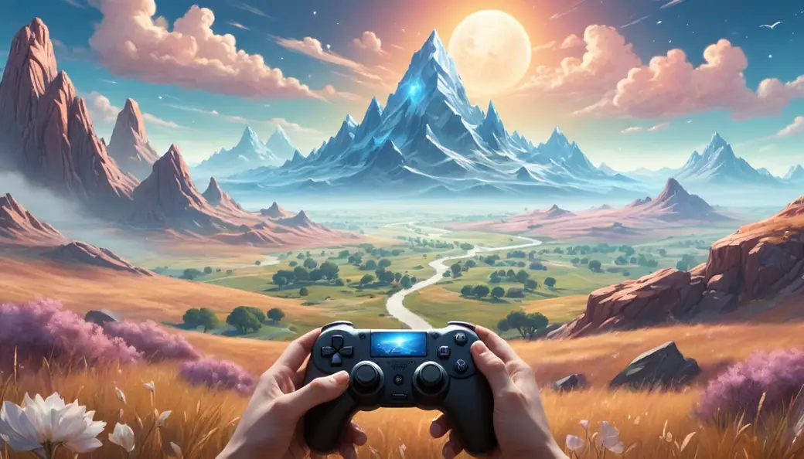
+ When there's a random choice for letting the game choose a parameter for something, make the range as wide as possible, don't make it too narrow or try to restrict it.
+ When making something operate via randomization, don't be lazy and just put a ‘random(1,999)’ function call and call it day - instead make it have logic/structure/origin/meaning to it by splitting the randomization into a process of steps that have context and rarity factored into them. Let the random generator first read the parameters of the level's general/ambient environment, then decide based on those what the random generator is allowed to do commonly, what it's supposed to do rarely and what should happen very rarely as an anomaly. If you're generating a desert environment, make sand common and abundant, make it less likely for it to spawn an oasis and make it a chaos driven anomaly to spawn an out-of-place snowman with an accompanied object (freezer) that explains its presence there to some degree. Allow freak occurrences but always support the logic why or how they got there and how they've stayed intact long enough for the player to find them.
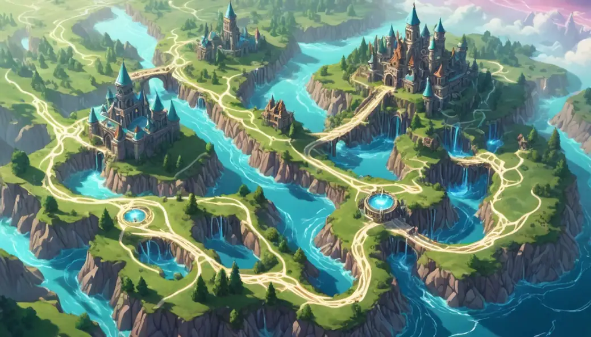
+ Don't lock level progression in a linear way. Shuffle the levels around, don't tie their content and difficulty into hard coded instances. Make the game be not progressively harder or more complicated during later levels, but simply different in what style of content the player will encounter within. Focus on offering variety throughout a playthrough, not an infinite ramp up of more difficult challenges.
+ Avoid "infinite/survival" game modes where the player is doomed to eventually die and lose without any true way to win or change the player’s fate. They feel arbitrary, futile and meaningless to play. Focus on making the game either replayable with maximum variety or infinitely playable but sectioned into campaign sessions that can be completed and continued on from where previously left off, with a persistent element that concretely shows that players action had an impact in the world, despite the overall game being infinite.
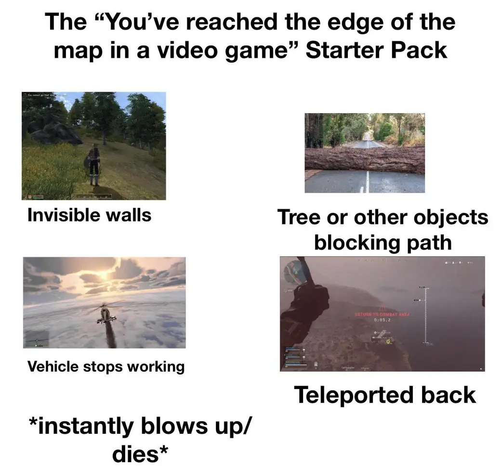
+ Don't put invisible walls or disable player functionality in an attempt to prevent them from going somewhere or doing something - design the environments and player core functionality in such a way that any limitations come naturally from within that is intuitive to the player. Never resort to arbitrary measures that wouldn't make sense if it were real life.
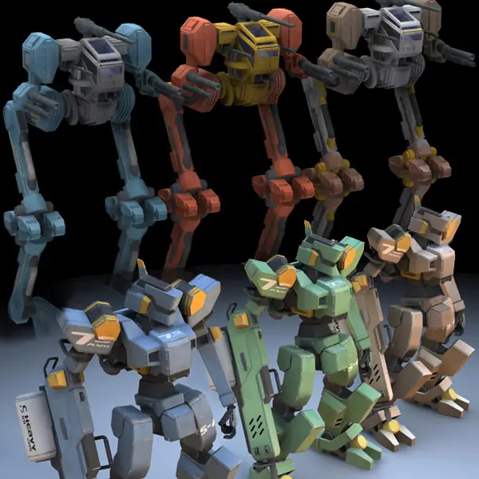
+ Allow players to customize their character - even if it's a prebuilt instance. The cheapest and most powerful implementation is simply choosing a color tint for any 1-3 elements on the character, be it hair color, armor/cloth color, accessories color, equipment color or skin color. That's all that is needed - you can even restrict the palette to omit garish/harsh colors with too much saturation or brightness if the game has a gritty realistic tone to it while still offering the entire rainbow for the player to be any color they want.
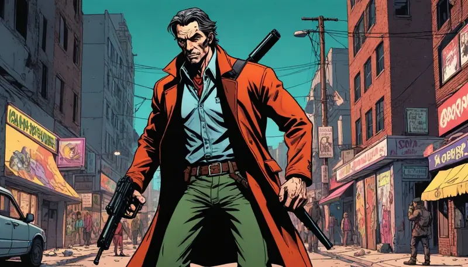
+ If a player has a gun, let them be able to shoot anyone with it, even at an important npc that is vital to a story. Design the game's story in a way as if the player has a kill-field that could randomly activate at any time and frag someone on the spot for no reason other than because the player felt like it. Make the game completable even if the player kills a canon critical story character, albeit with a different ending that reflects the change.
+ If the game has open world/sandbox/data driven style elements/features/systems/tech, such as fully destructible terrain, ability to deploy new characters from a buy/spawn menu, freely switch between characters in the level, have the ability for characters to equip/carry anything or even a structure of the game itself that theoretically allows for remixing any level to be shuffled with any equipment - then please embrace these systems and functionality when creating levels or structuring the metagame for your game. Do not add them only to arbitrarily cut them down and make them barely matter in the experience.
+ Do not make destructible terrain only to make a game that is too afraid to use it because of the freedom it provides. Don't be too timid to fully utilize it because some scripted fantasy moment you've devised would be ruined by it because it would allow a player to bypass it or corrupt it from happening exactly the way you envisioned instead of letting the player choose how they play.
Let go of your ego and instead design levels, content, campaigns, writing and gameplay in such a way that it passively/naturally support things like fully destructible terrain - building the game in harmony with it, not trying to fight it, suppress it or limit it because your ego wanted to force a player have a very specific scripted moment.
Your mistake ends up merely creating ludo-narrative dissonance instead because fully destructible terrain or other sandbox style systems/features by their very nature reject the notion of constriction of freedom by arbitrary scripted means born out of a selfish ego trying to assert control to fulfill the developers own unmet needs instead of being in the service of the player and maximizing the potential for them to live out their cool moments that emerge spontaneously out of gameplay when they interact with the chaotic nature of fully destructible terrain or other similar sandbox style systems.
In other words: don't shove a square peg into the round hole like a dunce. If you want to provide scripted controlled experiences, then do it in a non-interactive medium such as a movie, video, comic or book - they're far better for that.
+ Avoid the player have instantly fail the game and have to restart if they did something against the true story script - make a non-canon "player decided to be a jackass" branch that exists in parallel with the original story line and have the players final ending be the one that scored the most decision points.
+ Always favor intrinsic motivations for driving the player and influencing/encouraging their actions - avoid extrinsic motivators such as punishments and rewards as these will steal away the players focus from enjoying the game for the game itself, which will feel hollow as an experience - enough so to make a player quit the game and curse it for wasting their time.
+ Extrinsic motivators are these:
- Unlockables.
- Progression systems.
- Penalties for mistakes.
- Collectables.
- Money + shop systems.
- Upgrade trees.
- Punishments for not following the developers script of how they think the game should be played.
- Achievement notifications.
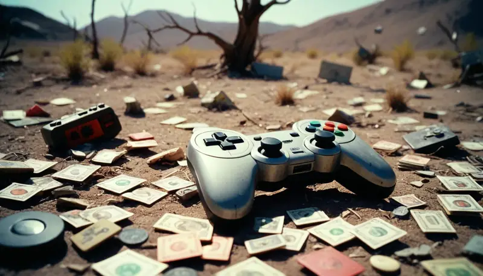
All of these kill long term sustainability of the game. They may seem to work, but they only work for a short time and for the wrong reasons.
Two questions reveal the weakness of extrinsic motivators and why they do not work:
1) What do you want the player to do?
2) What do you want the player's reasons to be to do it?
Think about it.
+ Intrinsic motivators however are pure; the player plays the game because the moment to moment gameplay, mechanics and metagame are enjoyable/interesting/compelling that the act of just playing the game is satisfying. This means make movement fun, make combat/whatever interactivity fun, "easy to learn but hard to master" or "easy to pick up and play yet massively deep and varied no matter how long the player plays the game". As long as nothing gets in the way of intrinsic fun - like extrinsic motivators - the game is effectively (re)playable forever and still fun even if all the game content was depleted/exhausted.
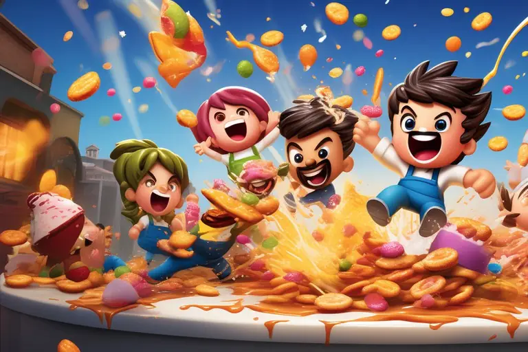
+ Always remember the game belongs to the player when it is shared to them, it is no longer yours in the sense of how it's designed. The moment you start asking for time or money for your game instead of keeping it strictly as a private creation, you will receive feedback - including players ignoring your game, which is feedback too, provided you were trying to get them to play it.
+ If your ultimate goal is to share an unforgettable/good experience while earning money, gaining fame or creating connections with the people that play your game, then thinking selfishly will get you no success.
This means you will have to streamline systems, smoothen mechanics, improve controls, learn best practices of user interface design, ensure that you show important or useful information visibly and write your texts in a way they are reasonably universally understandable.
No part of the game should require the knowledge of the developer’s own inner mind to be able to thrive in the game. This is where knowledge of Nonviolent Communication can come handy to understand human psychology, communication strategies and how fundamental human needs and feelings work. Books on the subject of UI/UX (User Interface, User Experience) are very useful too.
However, this doesn’t mean highly fidelity audiovisuals or excessive polish and lots of “juiciness” or interaction details like screenshake, compositional filters (vignette, bloom, motion blur, etc) particle effects and other such things. These mean nothing if you don’t get the basics done correctly. Again, you can polish a ball of crap, but it will still be crap - so make the core actually solid first before doing these things.
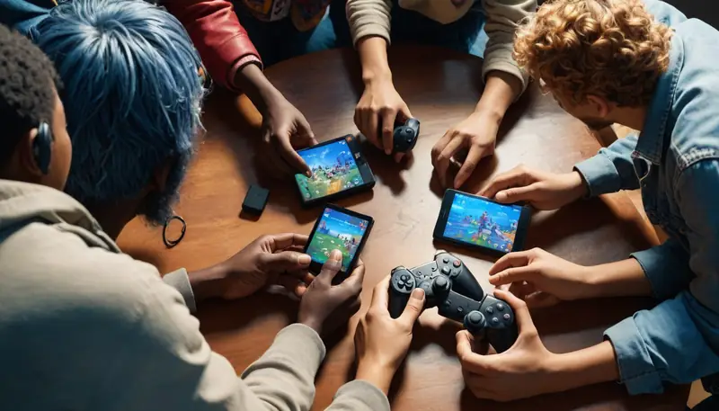
+ Depending on the target audience regarding player experience with video games, their country/culture of origin or their age/mental maturity, there may be blind spots that you will have to uncover to know how to change elements of the game to make them relatable/approachable to those people.
Usually it may be enough to sit down and play the game while pretending to be clueless and imagine what it would feel like for someone that doesn't have inside knowledge of the game or its developer. If you're lacking in empathy and experiences to anticipate these factors, you will need to conduct testing and collect feedback from players/testers to gain that skill of empathy within you, so that you can better understand how to make better design decisions that will work for anyone else that isn't you when playing the game.
+ Another great way to gain this experience is to play any and all games made by other people and see how their design decisions make you feel. Play a lot and see for yourself what feels nice, frustrating, annoying, infuriating, lame, boring, exciting, interesting, shocking, stupid or confusing. Look both at the bigger structures and the smaller details and identify the sources of the problem, think upon them, ponder the dynamics of what affects what and why. Eventually, gradually you will gain the insight through experience to see how design decisions affect a game. You will develop an intuition for the best design decisions no matter what problem you face.
You don’t need future tech to change the world today
I hope this will awaken more consideration on the powerful potential of game design alone in shaping the future of games without needing some sort of magical techno unicorn to save the day.
Physical technology has indeed come far and nowadays computers are far more capable and robust than they were 20 years ago, but the technology of the mind - aka ‘design technology’ - has severely lagged behind, being stuck in the mud for the longest time.
Just by reframing many existing game archetypes with a new structure, a new organization of its systems and a new method of the logistics of content within a game, it is possible to create the next big thing with surprisingly minimal resources.
I ask you to do this:
- Question existing design beliefs.
- Think openly without constraints of traditions.
- Be brave to retool existing ideas with new frameworks.
- Work smart, not hard.
- Use the benefits of video games as a medium. It's an interactive medium after all!
- Don’t become your own worst enemy by painting yourself into a corner.
- At the end of the day, create something that first and foremost enhances the player’s life.
You do not have to come up with anything exotic or out of this world. You don’t have to be unique for the sake of it to make the next big thing. Instead, build a good foundation that is robust, modular, reusable and infinitely expandable.
Then use it to its full capabilities while avoiding limiting it by creating its content/systems/metagame/premise in the specific wrong way that would accidently turn it into a finite dead-end.
With even a single well-made project, you could be comfortably set for the rest of your life and you’ll provide far more enrichment and joy to the world than anything we’ve had available to us so far.
See a new frontier of possibilities for better games that seemingly don't seem so different on the surface compared to existing games, but are vastly superior in every way.
This is how legendary games are designed.
Talk about it
Questions, disagreements and ideas of your own are all welcome. Discuss this article with other readers on the Reactorcore Games Discord, follow new articles and dev news on Patreon, or write to me directly.